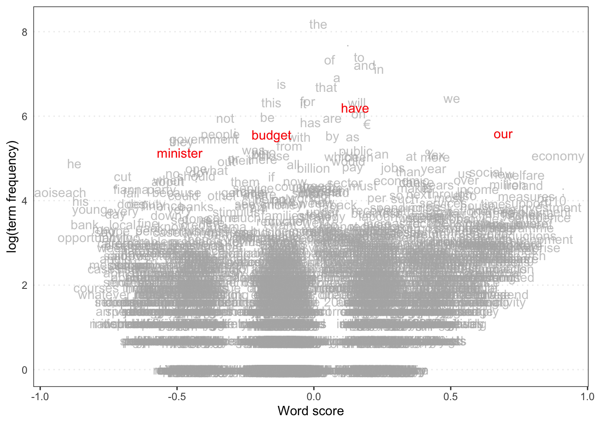
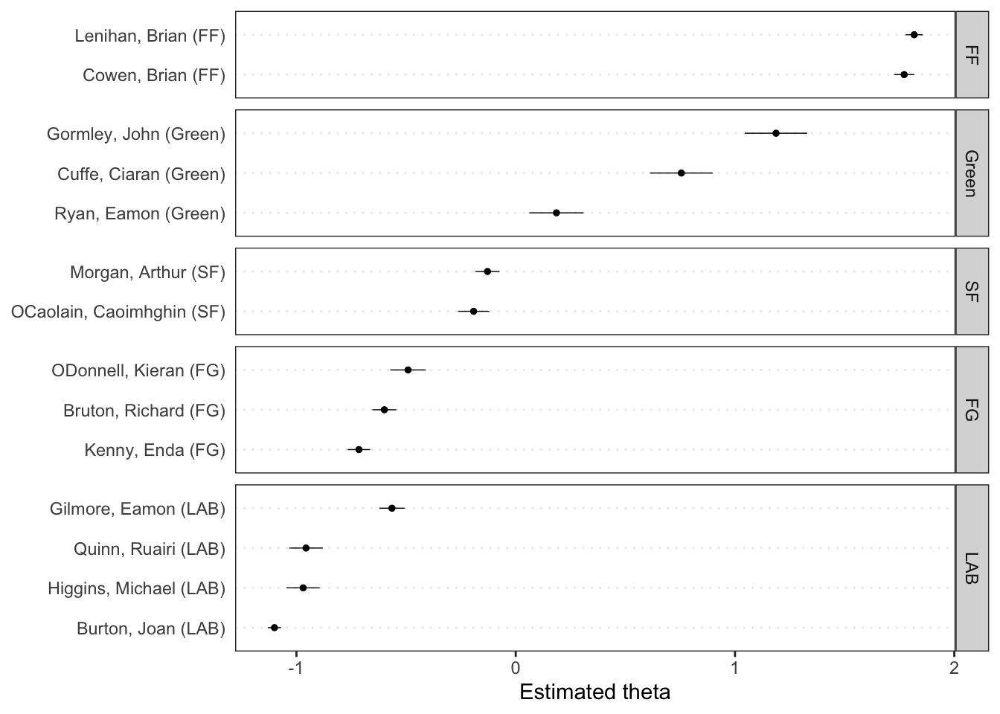
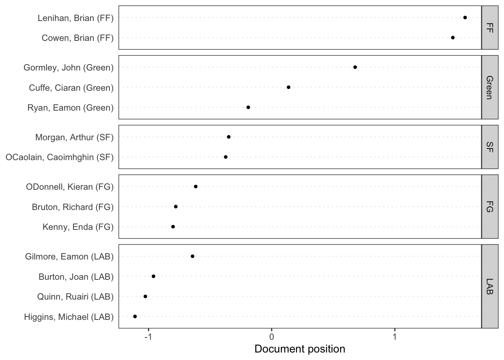

The survey is made up of a variety of blocks under which the questions encompass customer preferences, behaviours and demographics. It follows in a structured format where the questions are categorized by different categories of thew ell respondents such as movies, DVD, software and demographics.
The structure of the questionnaire includes questions scale based on LLikert scale, questions selection based on types of multiple choice and open ended. Similarly, the questionnaire topics include demographics, societal views on the media content, ideas for technologies, the patterns of purchase in terms of tools and how the respondents describe themselves in terms of age, sex and income.
The questions pose the problem of media users and their preference, then raise the issue of software interest and concern before shifting to the subject of buying behavior back and later turning to the demographic questions. This clear sequence helps in encouraging the respondents with the survey successful and ensures the most confidential information has been captured at such stage.
Q4. The Diversity and Inclusiveness Survey features specific questions designed to assess various aspects of diversity and inclusivity, focusing on topics such as race, ethnicity, and gender. In contrast, the Movie Rental Survey is more general, allowing for the addition of a wide range of questions that may not directly relate to diversity or inclusiveness. This flexibility enables customization based on different research objectives, highlighting the tailored nature of the Diversity and Inclusiveness Survey compared to the open-ended approach of the Movie Rental Survey.
Assignment 2
Q2. a) Analyzing Google Trends Data for “Trump,” “Kamala Harris,” and “Election” Using the Google Trends Website: To analyze interest in “Trump,” “Kamala Harris,” and “Election,” first visit the Google Trends website. Enter the keywords in the search bar and select a time frame for analysis. Once the data is displayed, you can download it as a CSV file. This method provides an intuitive interface for viewing trends, allowing for a manual inspection of dates and interest levels. You can visualize the data using software like Excel.
Using the gtrendsR Package in R: Alternatively, you can utilize the gtrendsR package in R for automated data retrieval. After installing and loading the package, use the gtrends function to collect data for the keywords. The resulting data frame includes detailed information on interest over time, making it easier to perform statistical analyses and visualizations directly in R.
Differences Between the Two Methods: The Google Trends website offers a user-friendly experience suitable for quick searches, but it requires manual data handling. In contrast, the gtrendsR package allows for automated collection of data, enabling more extensive analysis and visualization capabilities. Additionally, the package can provide finer granularity in data collection, making it preferable for users comfortable with coding and looking for deeper insights into trends over time.
Assignment 3
Q3. a)
# Sample program for using quanteda for text modeling and analysis# Documentation: vignette("quickstart", package = c("quanteda.textstats", "quanteda.textmodels")# Website: https://quanteda.io/library(quanteda)
Warning: package 'quanteda' was built under R version 4.3.3
Warning in .recacheSubclasses(def@className, def, env): undefined subclass
"ndiMatrix" of class "replValueSp"; definition not updated
See https://quanteda.io for tutorials and examples.
library(quanteda.textmodels)
Warning: package 'quanteda.textmodels' was built under R version 4.3.3
library(quanteda.textplots)
Warning: package 'quanteda.textplots' was built under R version 4.3.3
library(readr)library(ggplot2)# Wordcloud# based on US presidential inaugural address texts, and metadata (for the corpus), from 1789 to present.dfm_inaug <-corpus_subset(data_corpus_inaugural, Year <=1826) %>%tokens(remove_punct =TRUE) %>%tokens_remove(stopwords('english')) %>%dfm() %>%dfm_trim(min_termfreq =10, verbose =FALSE)set.seed(100)textplot_wordcloud(dfm_inaug)
## Why is the "communist" plot missing?## The word communist is missing in the plot because they didn't use this word in there document or speechtheme_set(theme_bw())g <-textplot_xray(kwic(tokens(data_corpus_inaugural_subset), pattern ="american"),kwic(tokens(data_corpus_inaugural_subset), pattern ="people"),kwic(tokens(data_corpus_inaugural_subset), pattern ="communist"))g +aes(color = keyword) +scale_color_manual(values =c("blue", "red", "green")) +theme(legend.position ="none")
library(quanteda.textstats)
Warning: package 'quanteda.textstats' was built under R version 4.3.3
Warning in .recacheSubclasses(def@className, def, env): undefined subclass
"ndiMatrix" of class "replValueSp"; definition not updated
features_dfm_inaug <-textstat_frequency(dfm_inaug, n =100)# Sort by reverse frequency orderfeatures_dfm_inaug$feature <-with(features_dfm_inaug, reorder(feature, -frequency))ggplot(features_dfm_inaug, aes(x = feature, y = frequency)) +geom_point() +theme(axis.text.x =element_text(angle =90, hjust =1))
# Get frequency grouped by presidentfreq_grouped <-textstat_frequency(dfm(tokens(data_corpus_inaugural_subset)), groups = data_corpus_inaugural_subset$President)# Filter the term "american"freq_american <-subset(freq_grouped, freq_grouped$feature %in%"american") ggplot(freq_american, aes(x = group, y = frequency)) +geom_point() +scale_y_continuous(limits =c(0, 14), breaks =c(seq(0, 14, 2))) +xlab(NULL) +ylab("Frequency") +theme(axis.text.x =element_text(angle =90, hjust =1))
Document-feature matrix of: 6 documents, 4,346 features (85.57% sparse) and 4 docvars.
features
docs my friends , before i
1953-Eisenhower 0.14582574 0.14582574 4.593511 0.1822822 0.10936930
1957-Eisenhower 0.20975354 0.10487677 6.345045 0.1573152 0.05243838
1961-Kennedy 0.19467878 0.06489293 5.451006 0.1297859 0.32446463
1965-Johnson 0.17543860 0.05847953 5.555556 0.2339181 0.87719298
1969-Nixon 0.28973510 0 5.546358 0.1241722 0.86920530
1973-Nixon 0.05012531 0.05012531 4.812030 0.2005013 0.60150376
features
docs begin the expression of those
1953-Eisenhower 0.03645643 6.234050 0.03645643 5.176814 0.1458257
1957-Eisenhower 0 5.977976 0 5.034085 0.1573152
1961-Kennedy 0.19467878 5.580792 0 4.218040 0.4542505
1965-Johnson 0 4.502924 0 3.333333 0.1754386
1969-Nixon 0 5.629139 0 3.890728 0.4552980
1973-Nixon 0 4.160401 0 3.408521 0.3007519
[ reached max_nfeat ... 4,336 more features ]
rel_freq <-textstat_frequency(dfm_rel_freq, groups = dfm_rel_freq$President)# Filter the term "american"rel_freq_american <-subset(rel_freq, feature %in%"american") ggplot(rel_freq_american, aes(x = group, y = frequency)) +geom_point() +scale_y_continuous(limits =c(0, 0.7), breaks =c(seq(0, 0.7, 0.1))) +xlab(NULL) +ylab("Relative frequency") +theme(axis.text.x =element_text(angle =90, hjust =1))
dfm_weight_pres <- data_corpus_inaugural %>%corpus_subset(Year >2000) %>%tokens(remove_punct =TRUE) %>%tokens_remove(stopwords("english")) %>%dfm() %>%dfm_weight(scheme ="prop")# Calculate relative frequency by presidentfreq_weight <-textstat_frequency(dfm_weight_pres, n =10, groups = dfm_weight_pres$President)ggplot(data = freq_weight, aes(x =nrow(freq_weight):1, y = frequency)) +geom_point() +facet_wrap(~ group, scales ="free") +coord_flip() +scale_x_continuous(breaks =nrow(freq_weight):1,labels = freq_weight$feature) +labs(x =NULL, y ="Relative frequency")
# Only select speeches by Obama and Trumppres_corpus <-corpus_subset(data_corpus_inaugural, President %in%c("Obama", "Trump"))# Create a dfm grouped by presidentpres_dfm <-tokens(pres_corpus, remove_punct =TRUE) %>%tokens_remove(stopwords("english")) %>%tokens_group(groups = President) %>%dfm()# Calculate keyness and determine Trump as target groupresult_keyness <-textstat_keyness(pres_dfm, target ="Trump")# Plot estimated word keynesstextplot_keyness(result_keyness)
# Plot without the reference text (in this case Obama)textplot_keyness(result_keyness, show_reference =FALSE)
library(quanteda.textmodels)# Irish budget speeches from 2010 (data from quanteda.textmodels)# Transform corpus to dfmdata(data_corpus_irishbudget2010, package ="quanteda.textmodels")ie_dfm <-dfm(tokens(data_corpus_irishbudget2010))# Set reference scoresrefscores <-c(rep(NA, 4), 1, -1, rep(NA, 8))# Predict Wordscores modelws <-textmodel_wordscores(ie_dfm, y = refscores, smooth =1)# Plot estimated word positions (highlight words and print them in red)textplot_scale1d(ws,highlighted =c("minister", "have", "our", "budget"), highlighted_color ="red")

# Get predictionspred <-predict(ws, se.fit =TRUE)# Plot estimated document positions and group by "party" variabletextplot_scale1d(pred, margin ="documents",groups =docvars(data_corpus_irishbudget2010, "party"))
# Plot estimated document positions using the LBG transformation and group by "party" variablepred_lbg <-predict(ws, se.fit =TRUE, rescaling ="lbg")textplot_scale1d(pred_lbg, margin ="documents",groups =docvars(data_corpus_irishbudget2010, "party"))
# Plot estimated document positionstextplot_scale1d(wf, groups = data_corpus_irishbudget2010$party)

# Transform corpus to dfmie_dfm <-dfm(tokens(data_corpus_irishbudget2010))# Run correspondence analysis on dfmca <-textmodel_ca(ie_dfm)# Plot estimated positions and group by partytextplot_scale1d(ca, margin ="documents",groups =docvars(data_corpus_irishbudget2010, "party"))

b). The lexical dispersion plot reveals shifts in U.S. presidential rhetoric from Eisenhower to Biden, with the terms “American” and “people” appearing consistently but with varying emphasis. Presidents like Reagan, Clinton, Obama, and Trump frequently used both terms, reflecting a focus on national identity and populist themes. More recent presidents, especially Biden, show increased usage of “people,” suggesting a shift toward inclusive language. Earlier presidencies like Eisenhower and Johnson have fewer instances, indicating a leaner use of direct appeals to citizens in speeches, potentially due to changes in cultural and rhetorical trends over time.
Q4. Wordfish was created for text data analysis, and it is particularly helpful for determining where documents fall on a latent scale based on word usage. By quantifying variations in word frequency among documents using a Poisson-based method, it enables researchers to deduce the ideological or policy stances of texts without being aware of those stances beforehand. Wordfish can be used to estimate these locations in policy documents, political speeches, or any corpus where positional scaling is important. Wordfish is useful for social science and political science research because it can reveal hidden themes or points of view in texts by spotting unique word patterns.
Assignment 4 (Data Collection)
Q1.
## Workshop: Scraping webpages with R rvest package# Prerequisites: Chrome browser, Selector Gadgetoptions(repos =c(CRAN ="https://cran.rstudio.com/"))install.packages("rvest")
The downloaded binary packages are in
/var/folders/fp/9t0t7f910m9fbvmzj10jn0h80000gn/T//RtmpJwDvAD/downloaded_packages
# install.packages("tidyverse")library(tidyverse)
── Attaching core tidyverse packages ──────────────────────── tidyverse 2.0.0 ──
✔ dplyr 1.1.4 ✔ stringr 1.5.1
✔ forcats 1.0.0 ✔ tibble 3.2.1
✔ lubridate 1.9.3 ✔ tidyr 1.3.0
✔ purrr 1.0.2
── Conflicts ────────────────────────────────────────── tidyverse_conflicts() ──
✖ dplyr::filter() masks stats::filter()
✖ dplyr::lag() masks stats::lag()
ℹ Use the conflicted package (<http://conflicted.r-lib.org/>) to force all conflicts to become errors
install.packages("rvest")
The downloaded binary packages are in
/var/folders/fp/9t0t7f910m9fbvmzj10jn0h80000gn/T//RtmpJwDvAD/downloaded_packages
library(rvest)
Attaching package: 'rvest'
The following object is masked from 'package:readr':
guess_encoding
library(readr)url <-'https://en.wikipedia.org/wiki/List_of_countries_by_foreign-exchange_reserves'#Reading the HTML code from the Wiki websitewikiforreserve <-read_html(url)class(wikiforreserve)
[1] "xml_document" "xml_node"
## Get the XPath data using Inspect element feature in Safari, Chrome or Firefox## At Inspect tab, look for <table class=....> tag. Leave the table close## Right click the table and Copy --> XPath, paste at html_nodes(xpath =)foreignreserve <- wikiforreserve %>%html_nodes(xpath='//*[@id="mw-content-text"]/div[1]/table[1]') %>%html_table()class(foreignreserve)
[1] "list"
# Why the first column is not scrapped?# Answer: This could happen due to table headers or inconsistent formatting in the HTML structure, # or if the first column is a row header or merged cell, which may not be captured in the table structure as expected by html_table.fores = foreignreserve[[1]][,c(1, 2,3,4,5,6,7,8) ] # [[ ]] returns a single element directly, without retaining the list structure.# names(fores) <-c("Country", "Forexreswithgold", "Date1", "Change1","Forexreswithoutgold", "Date2","Change2", "Sources")colnames(fores)
# Sources column useful?# Answer: The Column names are large so it could cause problem in code.That is the reson we changed these names. # Now I don't think they are useful## Clean up variables## What type is Date?str(fores) # Dates are character in this case
# Convert Date1 variablefores$Date1 =as.Date(fores$Date1, format ="%d %b %Y")class(fores$Date1)
[1] "Date"
write.csv(fores, "fores.csv", row.names =FALSE) # use fwrite?install.packages("data.table")
The downloaded binary packages are in
/var/folders/fp/9t0t7f910m9fbvmzj10jn0h80000gn/T//RtmpJwDvAD/downloaded_packages
# Load the data.table packagelibrary(data.table)
Warning: package 'data.table' was built under R version 4.3.3
Attaching package: 'data.table'
The following objects are masked from 'package:lubridate':
hour, isoweek, mday, minute, month, quarter, second, wday, week,
yday, year
The following objects are masked from 'package:dplyr':
between, first, last
The following object is masked from 'package:purrr':
transpose
The downloaded binary packages are in
/var/folders/fp/9t0t7f910m9fbvmzj10jn0h80000gn/T//RtmpJwDvAD/downloaded_packages
library(rvest)library(readr)url <-'https://en.wikipedia.org/wiki/List_of_countries_by_foreign-exchange_reserves'#Reading the HTML code from the Wiki websitewikiforreserve <-read_html(url)class(wikiforreserve)
[1] "xml_document" "xml_node"
## Get the XPath data using Inspect element feature in Safari, Chrome or Firefox## At Inspect tab, look for <table class=....> tag. Leave the table close## Right click the table and Copy --> XPath, paste at html_nodes(xpath =)currency <- wikiforreserve %>%html_nodes(xpath='//*[@id="mw-content-text"]/div[1]/table[2]') %>%html_table()class(foreignreserve)
[1] "list"
# Why the first column is not scrapped?# Answer: This could happen due to table headers or inconsistent formatting in the HTML structure, # or if the first column is a row header or merged cell, which may not be captured in the table structure as expected by html_table.fores = currency[[1]][,c(2,3,4,5,6,7,8) ] # [[ ]] returns a single element directly, without retaining the list structure.# names(fores) <-c("Year", "Quater", "USD", "EUR","JPY", "GBP","CAD")colnames(fores)